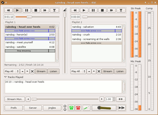

Infobox
| Beispiel: Internet DJ Console | ||
Homepage of Internet DJ Console 
 | ||
| Anwendungsbereich: | Internetradio | |
| Sprache: |   | |
| Autor: | Stephen Fairchild | |
| Erste Veröffentlichung: | März 2005 | |
| Lizenz: | GPL | |
| Oberfläche: | GTK+ | |
| Programmiersprache: | C, Python | |
| Voraussetzungen: | JACK | |
| Installation: | Paketquellen, kompilieren | |
Eine Infobox soll einen kurzen Überblick über das im Artikel näher beschriebene Programm geben. Die Infobox ist optional und muss daher nicht in einem Artikel vorhanden sein. Sie kann dann eingebaut werden, wenn sie sinnvoll mit Informationen gefüllt werden kann.
Syntax¶
Der Vorlage müssen vier Parameter zwingend übergeben werden:
der Name des Programms
die Projektseite
ein Bildschirmfoto (ist keines vorhanden, muss ein leeres Argument (
"") übergeben werden)die Installationsmethode(n), z.B. „Paketquellen“ oder „Kompilieren“
Darauf können beliebig viele Paare von Werten und Schlüsseln folgen. Das Trennzeichen ist eine Zeile mit +++.
{{{#!vorlage Infobox "Name des Programms", "[http://example.org/ Projektseite] {en}", "Bildschirmfoto.png", "Installationsmethode(n)"
+++
Wert 1
Schlüssel 1
+++
Wert 2
Schlüssel 2
}}}Es sind mehrere Schlüssel pro Wert möglich.
Beispiel¶
Dieses Beispiel wurde aus dem Artikel Internet DJ Console übernommen:
{{{#!vorlage Infobox "Internet DJ Console", "[sourceforge2:idjc: Homepage of Internet DJ Console] {en}", "Internet_DJ_Console/idjc_human.png", "Paketquellen, kompilieren"
+++
Anwendungsbereich:
Internetradio
+++
Sprache
{en} {it} {fr}
+++
Autor
Stephen Fairchild
+++
Erste Veröffentlichung
März 2005
+++
Lizenz
[wikipedia:GNU_General_Public_License:GPL]
+++
Oberfläche
GTK+
+++
Programmiersprache
C, Python
+++
Voraussetzungen
[:JACK:]
}}}Mögliche Angaben¶
Einige Beispile für mögliche Werte:
Anwendungsbereich
Sprache
Autor
Veröffentlichung
Lizenz
Oberfläche
Programmiersprache
Voraussetzungen
Zusätzlich bei Spielen:
Genre
Publisher
Systemvoraussetzungen
Medien
Strichcode/ EAN/ GTIN
Informationsbeschaffung¶
Es gibt diverse Möglichkeiten, Informationen zu einem Programm zu sammeln. Einige sind hier aufgeführt:
Gibt es eine Projektseite, wird man dort viele Informationen finden.
Mit apt-cache lassen sich viele Informationen zu (Quell-) Paketen abfragen.
Dateien mit den Namen
README,CHANGELOG,COPYRIGHTundLICENCEin Tarballs enthalten in der Regel einige Infos.
Links¶
Wiki/Textbausteine
 - alle Textbausteine
- alle TextbausteineWiki/Syntax
- HauptartikelWiki/Referenz - Referenz zum erstellen und überarbeiten von Artikeln
Wiki/Vorlagen/Infobox - die Vorlage, deren Verwendung hier beschrieben ist
- Erstellt mit Inyoka
-
 2004 – 2017 ubuntuusers.de • Einige Rechte vorbehalten
2004 – 2017 ubuntuusers.de • Einige Rechte vorbehalten
Lizenz • Kontakt • Datenschutz • Impressum • Serverstatus -
Serverhousing gespendet von